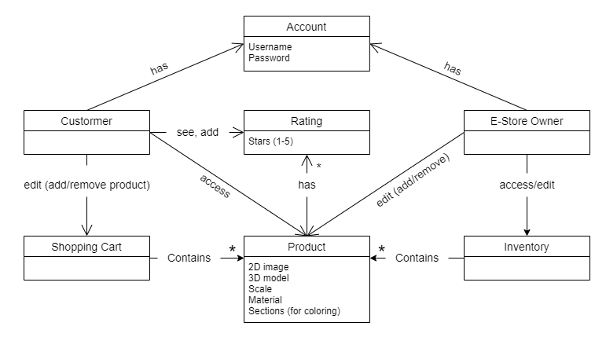

The following template provides the headings for your Design Documentation. As you edit each section make sure you remove these commentary 'blockquotes'; the lines that start with a > character and appear in the generated PDF in italics.
This project is a e-store featuring 3D printing related products, such as STL files and 3D printed models.
The purpose of this project is to provide a small business owner a custom made website to to sell their products with ease through E-commerce. An e-store is especially useful for a 3D printing related business, as it makes selling a mix of digital and physical products easier.
Provide a table of terms and acronyms.
| Term | Definition |
|---|---|
| STL | Stereolithography is a popular 3D printing technology. You might also hear it referred to as Standard Triangle Language or Standard Tessellation Language. Each file is made up of a seriesof linked triangles that describe the surface geometry of a 3D model or object. |
| MVP | Minimum Viable Product |
| API | An application programming interface is a way for two or more computer programs to communicate with each other. |
| UI | The user interface (UI) is the point of human-computer interaction and communication in a device. |
| Angular | Typescript Framework used to build Website. |
| MVN | Maven is a popular open-source build tool developed by the Apache Group to build, publish, and deploy several projects at once for better project management. The tool provides allows developers to build and document the lifecycle framework. |
This section describes the features of the application.
A website that has authentication for login & logout for both user and e-store owner. The customers can access/buy products, whereas the e-store owner is able to manage the product inventory. The software is able to save information such as the product inventory, list of products in a customer's cart.
Provide a list of top-level features in the order you plan to consider them.
About page Password for login
Product viewing
Product attribute selection
User STL file upload
Review system
This section describes the application domain.

The customer and e-store owner both have accounts that they can use to log into the website. The customer is able to access the products and their shopping cart. On the other hand, the e-store owner is able to access the product inventory, which contains specific products, as such, the owner is also able to edit specific products. These specific products can be split into three different categories, STL files provided by the store, user-uploaded STL files for 3D printing service, and finished 3D printed models. Both customers and the e-store owner are able to access product ratings/reviews.
This section describes the application architecture.
The following Tiers/Layers model shows a high-level view of the webapp's architecture.
The e-store web application, is built using the Model–View–ViewModel (MVVM) architecture pattern.
The Model stores the application data objects including any functionality to provide persistance.
The View is the client-side SPA built with Angular utilizing HTML, CSS and TypeScript. The ViewModel provides RESTful APIs to the client (View) as well as any logic required to manipulate the data objects from the Model.
Both the ViewModel and Model are built using Java and Spring Framework. Details of the components within these tiers are supplied below.
This section describes the web interface flow; this is how the user views and interacts with the e-store application.
On top of the page, there is a navigation bar containing links to different pages (Home, About, Cart, Search, Login/out). In the Home page, the user is able to see the list of products in the inventory that they can choose from. The login link takes user to the login page, where they will be prompted to input a username and password, when the user is logged in, the login link is replaced by a logout link. If the user is not an admin, they can add products to their cart through a specific product's page, which is accessed through searching the product in the search page. If the user is an admin, then they are able to edit a product in the specific product's page, accessed through search as well.
The View Tier is composed of all the components in the e-store shown to users for all pages and pieces of information necessary to navigate and properly use the website and interact with the ViewModel. It is composed of components such as: About, Cart, Home, Login, NavMenu, NewProduct, ProductAdmin, ProdutcPage, ProductSearch, and Products.
About is the component responsible for showing the information about the store and team creating it
Cart is a component only available to Customers and is responsible for showing the curstomers all products that have been added to the cart and allow interaction to the viewModel to checkout products
Home is the component where all products are displayed, a user is able to see all products currently in the model, their prices, quantities, and images.
Login is the component where the user can login by inputting a username and password, if the login is successful the login information is stored with the accountService in the ViewModel.
NavMenu is the component shown in all pages and shows all routerLinks to the other global components that can be reached by the users
NewProduct is the component available to admin only in which they can create new products by informing the properties of a product to be able to create a new product
ProductAdmin is the component available to admin only in which they update product information depending on the id of the user, or delete a product.
ProductPage is the component available to Customers only in which they can add and remove items to the cart and see the quantity, price, and name of the products
ProductSearch is the component in which users can search terms and find products that are avaivlable in the catalog. If user is an Admin, clicking on the product redirects you to ProductAdmin, if customer, to ProductPage.
Products is the component in which users can see all products available in the ViewModel and display them in the page
The ViewModel is composed mostly of controllers and services, being them in the code: ProductController, UserController, AccountService, CartService, and ProductService.
Those in the ViewModel tier are responsible for exposing and allowing communication between information created and stored in the model and user actions made in the view, creating the possibility of interaction and visibility of that information by the user in the e-store at any moment.
ProductController is the piece of code responsible for the user interaction with product information in the model. All usages of HTTP requests to create, delete, update, and get product are done via the product controller, making changes in the model only when those changes are allowed and maitaining all data safe and organized.
UserController is the piece of code responsible for the user interaction with User information in the model. All usages of HTTP requests to login, sign-up and get current users are done via the user controller, making changes in the model only when those changes are allowed and maitaining all data safe and organized.
AccountService is used by the View to keep track and utilize user account informations on the website. Information such as LoginStatus, UserName, and UserRole are stored in it and used to populate the view with the correct information for that user. Also, they are used to get the information to and from controllers.
CartService is used by the View to keep track and utilize cart per account informations on the website. Information such as products currently stored in user's cart, the amounts and ids of those products, and checkout and products cost are stored in it and used to populate the view with the correct information for that user. Also, they are used to get the information to and from controllers.
ProductService is used by the View to keep track and utilize products informations on the website. Information such as product's id, name, price, and quantity can be obtainned with it and used to populate the view with the correct information for that user. Also, they are used to get the information to and from controllers.
The model is built up of two major components: the UserList and the ProductList; the user list is made up of various users -- specifically Admins and Customers -- while the ProductList is made up of products.
Whenever the server starts, both the UserList and ProductList read their respective JSON files for records of current interactions on the site. While the ProductList doesn't know about the UserList, the UserList has an instance of the store's productlist, such that products can be interacted with (IE: quantity decreased, information accessed) when requested.
When a user logs in, their username and password are sent through the ViewModel tier to the Model tier, where it is handled by the UserList class. If a User doesn't exist with that name, it is created; otherwise, if the passwords match, the user is "logged in" (or, as far as the backend is concerned, the User's details are returned), otherwise the password fails, and they are not logged in.
Only a customer can be created when called from the ViewModel Tier; admins must be created manually in the code. When a customer is created, the UserList class checks to make sure that a user with that name does not already exist; if it doesn't, a new customer is created and returned, with the password input by the user. Said user is then added to the JSON.
Passwords are handled by a basic hashcode; when a User sends a password (both to create or log in) to a user, the hashcode of the password is taken and compared with that in the database (JSON).
Only one admin exists, and it is created manually every time the server boots; this allows for the Users JSON to be a list of Customers, not all Users, which makes the reading process simpler.
Products can be accessed in two ways: by the customer, who views them and puts them into their cart, and by the admin, who alters their features. Access to these features is reliant upon what account is currently logged in.
Product creation follows a similar process to User creation: the front end submits a request for product creation with specifications (quantity, price, etc.) and, if that product does not already exist, it is created and given an ID (said ID representing its "slot" in the store). The product is then added to the JSON and the ProductList.
Deleting and updating a product follow the same process; an admin puts in a request to delete/update a product and, so long as that product exists and is valid, it is done. While from the front end, a product cannot be accessed to be deleted or edited if it is invalid, the backend still handles these cases as a precaution. Additionally, whenever a user purchases an item from their cart, it decrements the quantity of that product. Regardless of the action taken, assuming it is successful, the JSON is updated promptly.
Design Improvements

This section will provide information about the testing performed and the results of the testing.
Acceptence testing and Issues found
With our unit testing, we wanted to get 100% coverage of every backend file: Product, ProductList, ProductListInterface, ProductController, User, Admin, Customer, UserController, UserListInterface, and UserList. In some cases, however, 100% coverage would not be possible; this becomes more true as classes become closer to the front-end (IE: User, Customer, and Admin could reach 100% coverage, but UserList and UserController could not). This issue was primarily because of the interaction between these classes and the main system as a whole; for example, running a test to create a new user would fail, not because the method was broken, but because said user had already been created as a result of a previous test run.
Any classes that could not be covered 100% by unit testing were covered thoroughly by manual testing.
Additionally, some of these coverage misses are because of last minute changes in the Sprint 2 release (IE: Customer's shopping cart changing from a list of products to a map of integers); we hope to remedy this in Sprint 3.